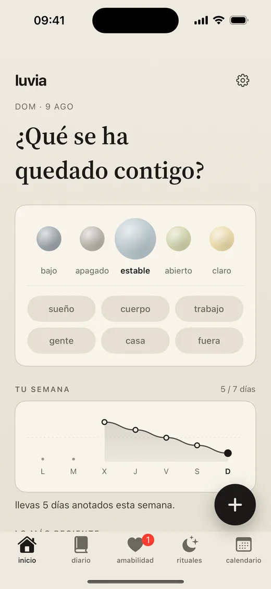
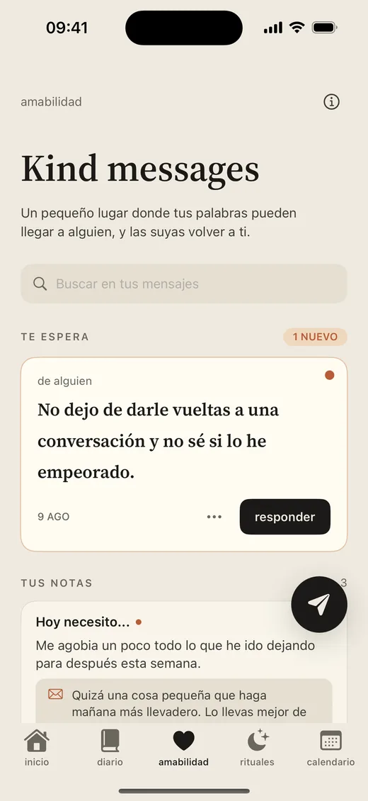
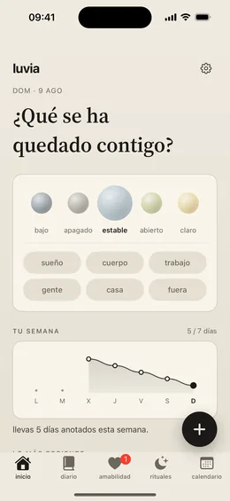
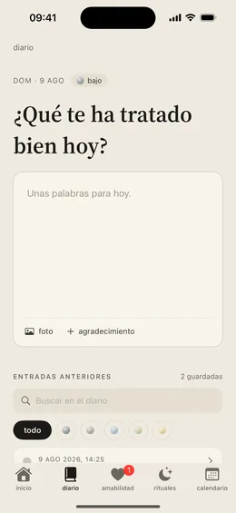
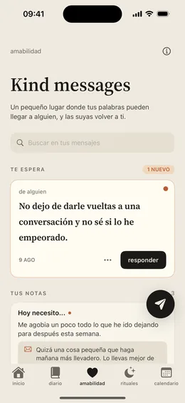
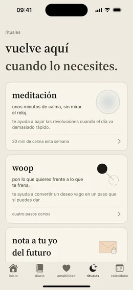
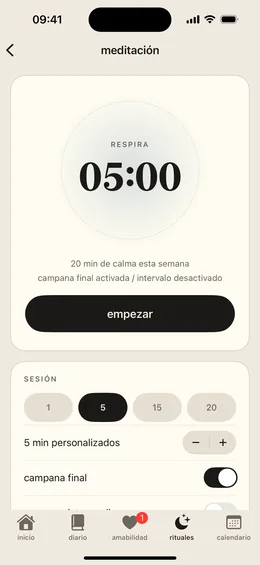
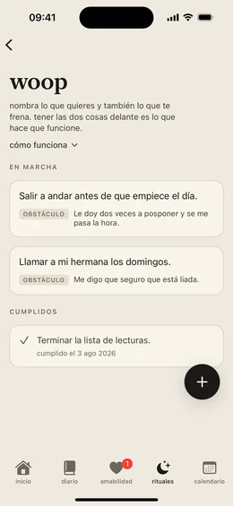
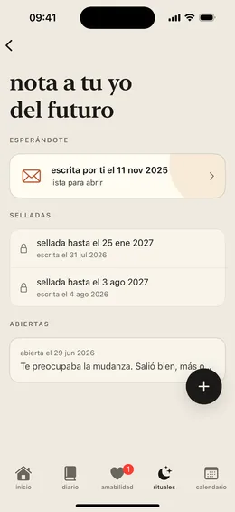
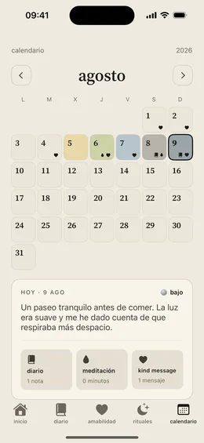

Un lugar más amable para hacer una pausa.
Luvia es la app de bienestar privada construida en torno a la amabilidad.
Registra tu ánimo, escribe tu diario y tu gratitud, dedícale un rato a un ritual y envía palabras amables de forma anónima. Tus reflexiones se quedan en tu dispositivo.

míralo
Luvia en treinta segundos.
Registro de ánimo, diario privado, rituales y mensajes amables, en una sola app tranquila.


apoyo anónimo
Kind messages, sin nombres.
Kind messages son mensajes anónimos de apoyo: un lugar seguro y amable para sentirte menos a solas. Envía lo que llevas dentro o acompaña el mensaje de otra persona cuando puedas.
Revisiones de seguridad antes de compartir
Luvia revisa los Kind messages en busca de datos de contacto, amenazas, acoso, contenido sexual, spam y otro material inseguro.
Guarda el que te importó
Fija un mensaje al día sobre el que escribiste. Se queda en esa entrada del diario, cerrado, hasta que vuelvas a abrirlo.
privado por defecto
Tus reflexiones se quedan en tu dispositivo.
Tus entradas del diario, notas de gratitud, registros de ánimo, sesiones de meditación y ajustes locales se guardan en tu dispositivo.
Diario en tu dispositivo
Escribe esa pequeña verdad, guarda un agradecimiento y tenlo cerca.
Sin anuncios ni rastreo
Luvia no muestra anuncios y nunca te rastrea en otras apps o webs. Tus reflexiones nunca se usan para publicidad.

rituales
Un sitio al que volver cuando lo necesites.
Rituales es el rincón de Luvia para las prácticas que eliges hacer. Tres, en un mismo sitio tranquilo.
Meditación
Elige cuánto rato quieres estar y deja que el temporizador cuente por ti, con campanas opcionales para abrir y cerrar la sesión.
WOOP
Deseo, resultado, obstáculo y plan. Cuatro pasos cortos para convertir un quiero difuso en un paso que sí puedes dar. Por qué funciona.
Nota a tu yo del futuro
Escribe hoy, elige una fecha y deja que quede sellada hasta entonces. Te llegará la mañana que hayas elegido.


capturas
Cuidado diario, organizado con amabilidad.
Ánimo, diario, gratitud, rituales, amabilidad y tu clima interior en una sola app de iOS.








creado para generar confianza
Límites sencillos para un espacio delicado.
Las reflexiones privadas se quedan en tu dispositivo
Luvia no usa tu diario privado, tu ánimo, tus agradecimientos ni tus sesiones de meditación para publicidad.
La amabilidad se modera
Los mensajes anónimos usan un procesamiento limitado para que la función pueda operar y se puedan prevenir abusos.
Un diseño tranquilo para cada día
Luvia está pensada para un uso diario tranquilo y reparador: un espacio amable y centrado para tu bienestar de cada día.
preguntas
Lo que todo el mundo pregunta primero.
¿Mi diario es realmente privado?
Sí. Tus entradas del diario, notas de gratitud, registros de ánimo y sesiones de meditación se guardan en tu dispositivo. Luvia no muestra anuncios, no te rastrea en otras apps o webs y nunca usa tus reflexiones privadas para publicidad.
¿Cuánto cuesta Luvia?
Luvia funciona con Luvia Pro, una suscripción de renovación automática facturada a través del App Store de Apple. La suscripción forma parte de cómo funciona Luvia: mantiene la app libre de anuncios y paga las revisiones de seguridad y la moderación que mantienen amables los Kind messages. El precio y el periodo de facturación se muestran en el App Store antes de comprar. Más en Soporte y FAQ.
¿Cómo funcionan los Kind messages anónimos?
Escribes una nota de apoyo y viaja hasta una persona desconocida, elegida al azar. No hay nombres, perfiles ni conversaciones. Cada mensaje se revisa en busca de datos de contacto, amenazas, acoso, contenido sexual y spam antes de llegar a nadie. Cómo funciona Kind messages.
¿Qué son los Rituales y qué es WOOP?
Rituales es donde Luvia guarda las prácticas que eliges hacer: el temporizador de meditación, WOOP y las notas a tu yo del futuro. WOOP viene de wish, outcome, obstacle, plan: deseo, resultado, obstáculo y plan. Nombras lo que quieres, imaginas lo mejor que puede salir de ahí, miras de frente el obstáculo que llevas dentro y decides qué harás en cuanto aparezca. Tener el deseo y el obstáculo presentes a la vez se llama contraste mental y lleva décadas estudiándose. Cómo funcionan los rituales.
¿Qué es una nota a mi yo del futuro?
Escribes unas líneas, eliges el día en que deben volver y las sellas. La nota queda cerrada hasta esa mañana, cuando Luvia te avisa de que ya está lista. Las notas viven en tu dispositivo y se incluyen en tus copias de seguridad, todavía selladas.
¿Luvia funciona en iPad?
Sí. Luvia es una app de iOS para iPhone y iPad, disponible en español e inglés. Ver todas las funciones.
¿Puedo exportar o borrar todo lo que he escrito?
Sí. Puedes exportar todo lo que has escrito cuando quieras, y borrar tus datos locales y tus datos de Kind messages desde la app en cualquier momento. Cómo, paso a paso.
¿Luvia es terapia o apoyo de salud mental?
No. Luvia ayuda con la reflexión, el diario, la meditación y el ánimo anónimo, pero no es terapia, atención médica, apoyo en crisis ni atención de emergencia. Si crees que podrías hacerte daño o hacérselo a otra persona, contacta de inmediato con los servicios de emergencia locales o con alguien de confianza.
aviso importante
Luvia no es apoyo de salud mental.
La app puede ayudarte con la reflexión, el diario, la meditación y el ánimo anónimo, pero no es terapia, atención médica, apoyo en crisis ni atención de emergencia. Si crees que podrías hacerte daño o hacérselo a otra persona, contacta de inmediato con los servicios de emergencia locales o con alguien de confianza.